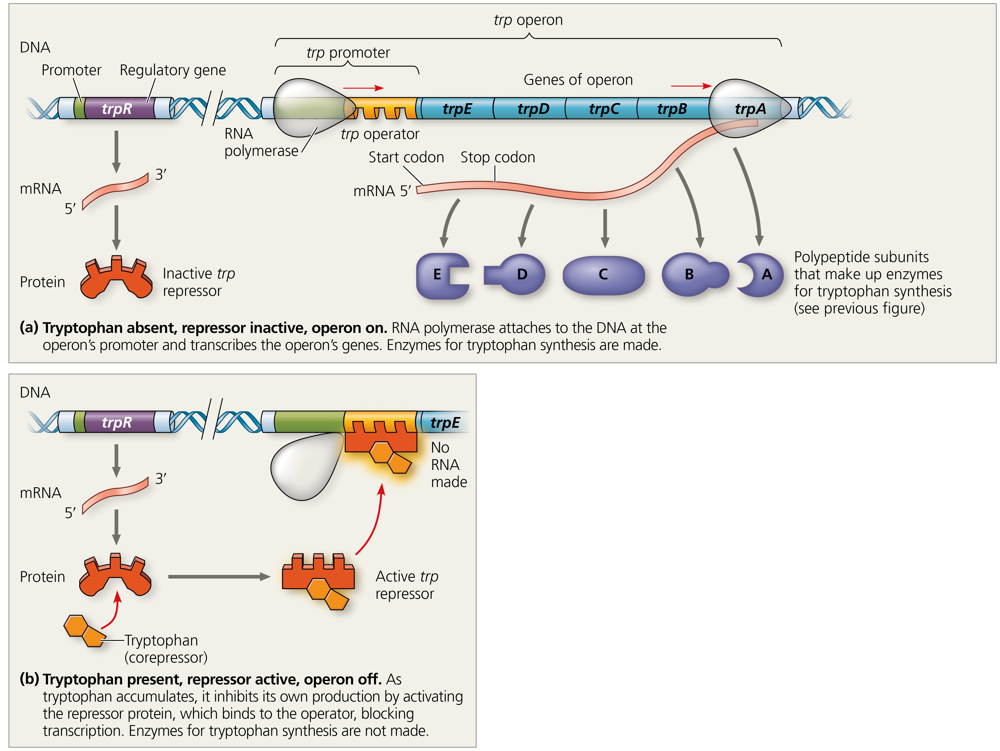
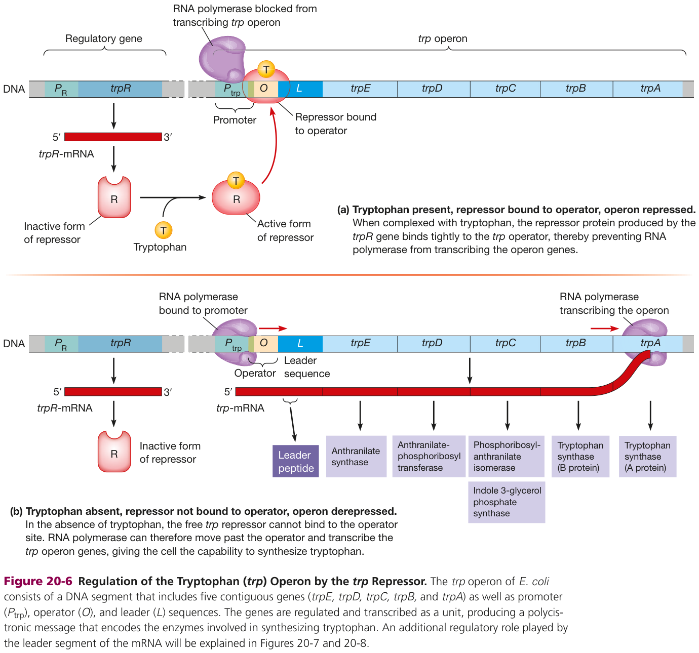
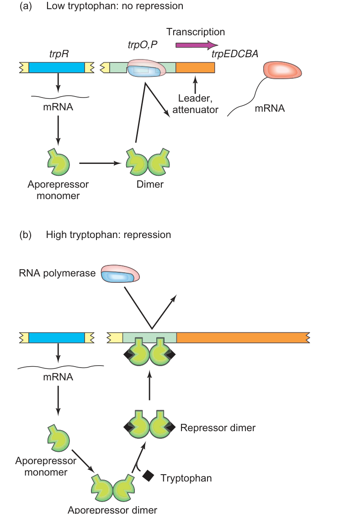
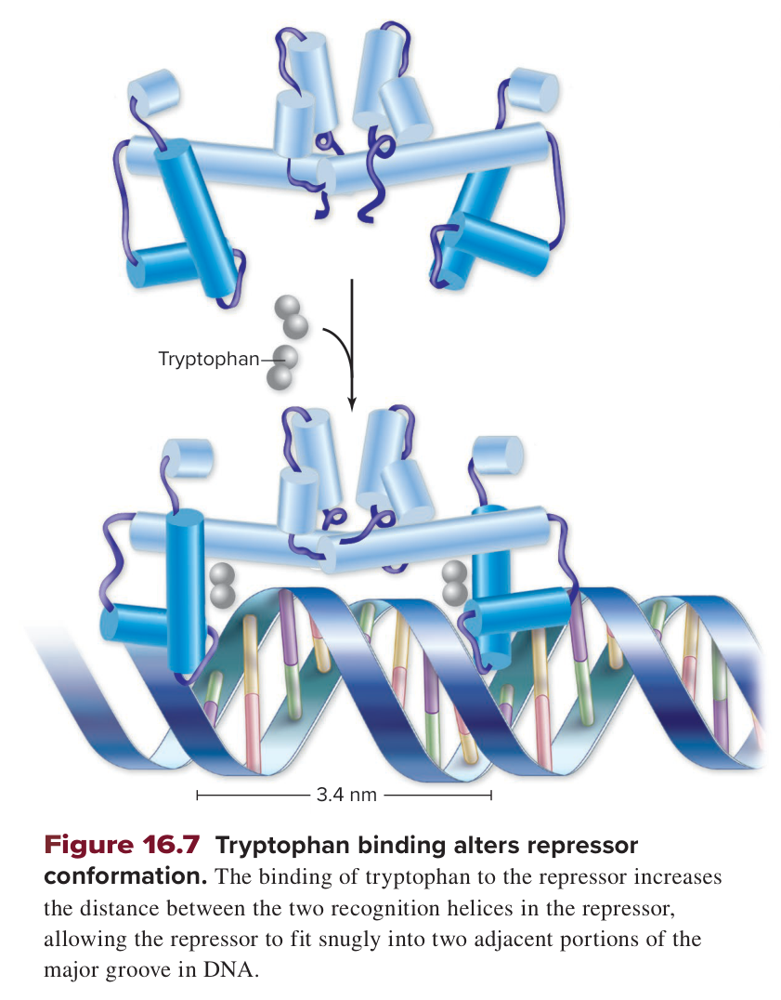
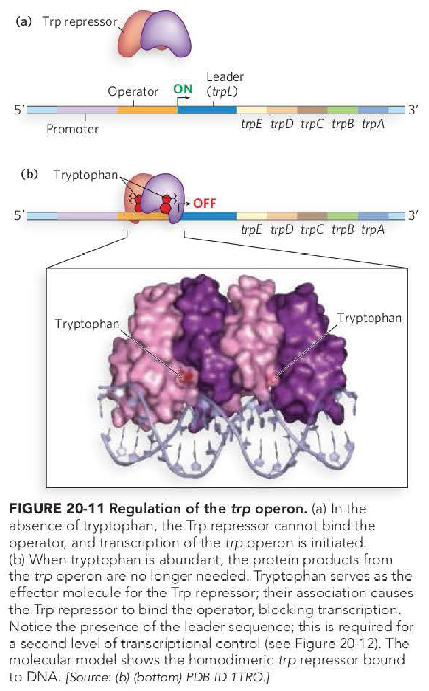
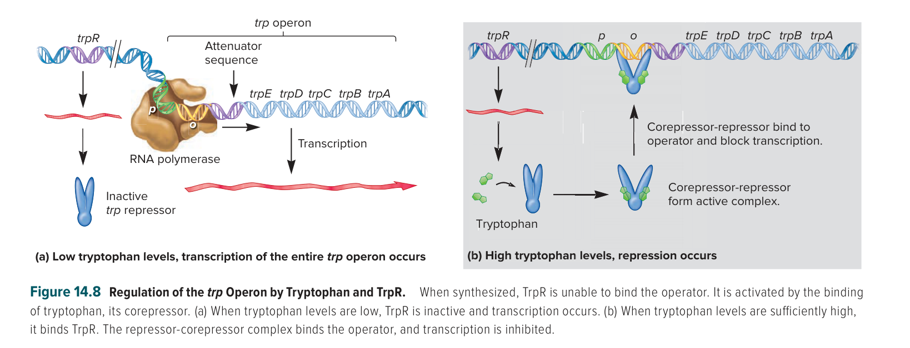

色胺酸操縱組的抑制蛋白為何平時無活性？「共同抑制物」究竟是抑制誰？
一次解開色胺酸操縱組（trp operon）最容易搞反的兩個核心疑問：抑制蛋白剛合成時就無活性，結合色胺酸後才會被活化；而 corepressor 是與抑制蛋白合作去抑制轉錄，絕不是去抑制「抑制蛋白」。
色胺酸操縱組的抑制蛋白在未結合色胺酸時原本就無活性，唯有結合色胺酸改變構形後才會轉為有活性，並結合操作子阻擋 RNA 聚合酶轉錄。色胺酸稱為「共同抑制物（審定名詞：輔抑制物，corepressor）」，意思是與抑制蛋白共同合作去抑制操縱組的轉錄，而不是去抑制「抑制蛋白」本身。
調節基因 trpR 剛表現出來的抑制蛋白（分子生物學稱脫輔抑制物 aporepressor）天生就抓不住操作子；結合色胺酸後，它才從無活性 → 有活性。
co-repressor＝幫抑制蛋白一起抑制「轉錄」英文 co- 是「共同／輔助」的意思。色胺酸活化抑制蛋白後，兩者組成的複合體結合到操作子，物理上阻擋 RNA 聚合酶結合啟動子，直接關閉轉錄起始。
lac 抑制蛋白預設有活性、結合異乳糖才失活；trp 抑制蛋白預設無活性、結合色胺酸才活化。因為兩者都靠活化態抑制蛋白關掉轉錄，所以同屬負調控。
01核心名詞先對齊（課本定義＋高中生易懂說明）
課本定義：大腸桿菌 DNA 上由單一啟動子、操作子（位於啟動子內或與之重疊）、前導序列（trpL）與五個連續結構基因（trpE、trpD、trpC、trpB、trpA）組成的可抑制型操縱組，編碼由前驅物合成色胺酸所需的酵素。
學生易懂說明：細菌用來自己合成胺基酸色胺酸的一整套基因開關。平常需要胺基酸時會開著持續轉錄；等到細胞內色胺酸夠多時再關掉，節省能量與原料。
課本定義：由位於 trp 操縱組外、具自身啟動子的調節基因（trpR）持續低量表現的別構調控蛋白。剛合成且未結合色胺酸時為無活性形態（脫輔抑制物），對操作子親和力極低；唯有結合色胺酸改變立體構形後，才成為具 DNA 結合能力的活性抑制蛋白。
學生易懂說明：負責關閉 trp 操縱組的蛋白質開關，但它單獨存在時無法卡上操作子；一定要先接上色胺酸，形狀才會調整成能緊密結合 DNA 的狀態。
課本定義：結合至無活性抑制蛋白的別構位，使其構形改變並活化以結合操作子、關閉操縱組轉錄的小分子效應物。臺灣教育部《生命科學名詞》審定為「輔抑制物」，高中選修生物一課本普遍稱為「共同抑制物」或「協同抑制物」。
學生易懂說明：co- 代表「共同／輔助」，也就是「跟抑制蛋白聯手去抑制基因轉錄的小分子」，絕不是「去抑制『抑制蛋白』的分子」。
課本定義：操縱組預設處於可轉錄狀態，當代謝終產物（輔抑制物）累積並活化抑制蛋白、使其結合操作子以關閉轉錄的負向調控機制，常見於胺基酸等合成代謝路徑。
學生易懂說明：平常保持開啟、終產物夠多才關閉的負回饋機制；因為最終仍是靠活性抑制蛋白結合 DNA 來關掉轉錄，所以和乳糖操縱組一樣都屬於「負調控」。
02拆解兩個最常搞反的連環疑問
疑問一：抑制蛋白平時無活性，是因為結合了色胺酸嗎？
剛好相反。色胺酸操縱組的調節基因（trpR）轉錄、轉譯出來的抑制蛋白，在尚未結合色胺酸的游離狀態下，本來就是無活性的（Weaver 5e 特別將這狀態稱為脫輔抑制物 aporepressor）。此時它對操作子的親和力極低，結合不上去，所以 RNA 聚合酶可以自由結合啟動子並轉錄 trpE～trpA。
當細胞內色胺酸濃度上升，兩分子色胺酸會結合到抑制蛋白二聚體的別構位，把一對螺旋-轉折-螺旋（helix-turn-helix）結構中的兩段辨識螺旋向外撐開，使兩段螺旋之間的距離調整至約 3.4 nm，正好嵌進 DNA 相鄰的兩個大溝（Raven 13e 圖 16.7）。也就是說，色胺酸不是讓抑制蛋白失活，而是讓抑制蛋白從「無活性」轉變為「有活性」。
「小分子結合抑制蛋白 → 抑制蛋白失去活性」是乳糖操縱組（lac operon）的行為（異乳糖作為誘導物，使原本有活性的 lac 抑制蛋白失活並脫離操作子）。trp 操縱組的別構方向剛好跟它完全顛倒。
疑問二：色胺酸作為「共同抑制物」，究竟是抑制轉錄，還是抑制了抑制蛋白？
是與抑制蛋白合作，間接抑制 RNA 聚合酶的轉錄起始；絕不是抑制「抑制蛋白」的活性。
把整個因果鏈按順序攤開成四個步驟，就能一次看清每一個角色的作用對象：
- 終產物累積：細胞內色胺酸濃度升高（自行合成足夠，或直接從外界環境吸收）。
- 別構活化抑制蛋白：色胺酸結合到無活性的 trp 抑制蛋白 → 活化抑制蛋白，使其具備與 DNA 結合的構形。
- 阻斷轉錄起始：活化後的「抑制蛋白—色胺酸複合體」緊密結合到 trp 操作子（位於 trp 啟動子內部／與啟動子重疊），直接阻擋 RNA 聚合酶結合啟動子，停止結構基因的轉錄。
- 連帶停止酵素合成：不再轉錄出新的 trp 多順反子 mRNA（且原有 mRNA 半生期很短，約 3 分鐘，Cox 2e Ch20），核糖體自然就不再轉譯出合成色胺酸的酵素。
色胺酸—抑制蛋白複合體直接作用在轉錄起始這一道關卡（擋住 RNA 聚合酶），並不是直接去抑制核糖體的轉譯作用。沒有合成色胺酸的酵素出現，是因為沒有 mRNA 產生的下游結果——這點在教甄考題裡極常考（例如 115 陽交附中第 7 題選項 A 即以「抑制蛋白質的轉譯」作陷阱）。
03鏡像對照：色胺酸操縱組（trp）vs. 乳糖操縱組（lac）
Weaver 5e 把 trp 操縱組的負調控形容成 lac 操縱組負調控的「鏡像（mirror image）」。兩者都是負調控（都由活化態抑制蛋白關閉轉錄），但預設狀態與小分子開關方向完全相反：
| 比較項目 | 色胺酸操縱組（trp operon） | 乳糖操縱組（lac operon） |
|---|---|---|
| 調控類別 | 可抑制型負調控（預設開啟） | 可誘導型負調控（預設關閉） |
| 代謝路徑性質 | 合成代謝（由前驅物製造色胺酸） | 分解代謝（將乳糖水解為單醣） |
| 調節基因（操縱組外） | trpR（持續低量表現） | lacI（持續低量表現） |
| 未結合小分子時的抑制蛋白 | 無活性（脫輔抑制物，無法結合操作子） | 有活性（緊密結合操作子、關閉轉錄） |
| 小分子效應物與角色 | 色胺酸（終產物）＝共同抑制物／輔抑制物（corepressor） | 異乳糖（受質異構物）＝誘導物（inducer） |
| 結合小分子後，抑制蛋白活性 | 無活性 → 有活性（活化） | 有活性 → 無活性（去活化） |
| 結合小分子後，轉錄結果 | 結合操作子 → 關閉轉錄（抑制） | 脫離操作子 → 開啟轉錄（誘導） |
| 細胞生理邏輯 | 平常需要自造胺基酸，終產物夠多就停工省能量（負回饋） | 平常沒乳糖不需浪費能量造酵素，有受質才開工 |
04六部經典教科書原圖對照（點擊可放大檢視）
以下精選橫跨普通生物學、細胞生物學、分子生物學與微生物學的 6 張原書機制圖，從宏觀開關流程一路看到 3.4 nm 螺旋變構與 PDB 1TRO 晶體結構模型：

🔍 點擊圖片放大
🔍 點擊圖片放大
🔍 點擊圖片放大
🔍 點擊圖片放大
🔍 點擊圖片放大
🔍 點擊圖片放大Inactive trp repressor，轉錄完整進行；(b) 高色胺酸時，色胺酸與抑制蛋白組成具活性的 Corepressor-repressor form active complex，再結合至操作子 o 阻斷轉錄。05十部經典教科書原始文獻考證（中英對照）
以下所有英文原文均直接回溯自本機知識庫所收錄之正式原文書譯本，一字不改，供備課、命題與教甄口筆試查核。
co-repressor 的字面意義：它與抑制蛋白共同作用，使抑制蛋白「具有活性」06高中課本對照、常見陷阱與教甄實戰
- 有收錄色胺酸操縱組（5 版）：全華、泰宇、翰林設專節完整介紹，三民、龍騰於專欄／小百科說明。五版口徑完全一致——色胺酸不足時，抑制蛋白不具活性、無法結合操作子；色胺酸過多時，色胺酸作為共同抑制物（翰林譯協同抑制物）結合並改變抑制蛋白構形，使其結合操作子以阻擋 RNA 聚合酶轉錄。
- 未收錄（2 版）：南一版、康熹版選修生物一僅教乳糖操縱組，未納入色胺酸操縱組。
- 術語對齊：教育部《生命科學名詞》審定
corepressor為「輔抑制物」，高中課本通稱「共同抑制物」，兩者完全等價。
- 陷阱一｜把活性方向跟 lac 寫反：看到 114 羅東高中第 3 題的實驗表格，記住「蛋白質 B（trp 抑制蛋白）在色胺酸高時結合 DNA、色胺酸低時脫離 DNA」，方向跟蛋白質 A（lac 抑制蛋白）完全相反；而調節基因 mRNA（丁）在四種條件下永遠恆定不變。
- 陷阱二｜把「轉錄」偷換成「轉譯」：115 陽交附中第 7 題選項 A 寫「抑制蛋白和操作子結合而抑制蛋白質的轉譯」——錯在層級！操縱組的抑制蛋白—共同抑制物複合體擋的是 RNA 聚合酶的轉錄起始，不是直接擋核糖體的轉譯。
- 陷阱三｜進階微調機制（弱化作用 attenuation）：大腸桿菌 trp 操縱組其實有雙層調控——抑制蛋白在轉錄起始提供約 70 倍抑制，加上 trpL 前導序列在轉錄延長期利用原核「轉錄—轉譯偶聯」的弱化作用再補 10 倍，合計達約 700 倍調控幅度（Weaver 5e Ch07、Cox 2e Ch20）。
本機知識庫同步檢索了所有普通生物學與分子生物學譯本：其中 Brooker 4e（Ch12）、Starr 14e（Ch10）與 Lodish 9e（Ch08）未展開原核 trp 操縱組抑制蛋白開關；Stryer 10e（Ch31）以 pur 抑制蛋白示範 corepressor、Brock 15e（Ch06）以 arg 操縱組示範 corepressor，兩書對 trp 操縱組則聚焦於弱化作用。至於「共同抑制物是否會被誤讀為去抑制『抑制蛋白』」的中文語意拆解，屬於高中教學現場常見迷思歸納，特此標明來源界線。